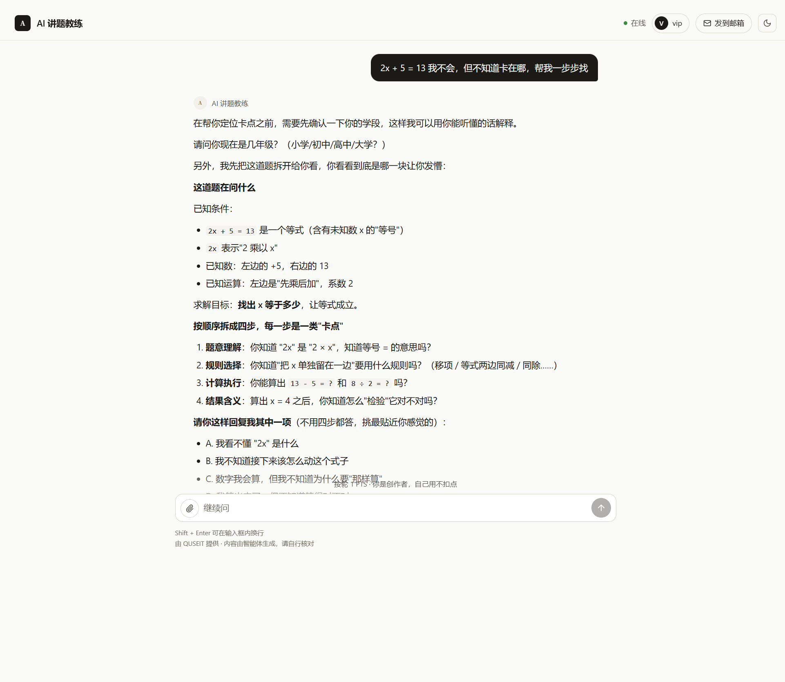
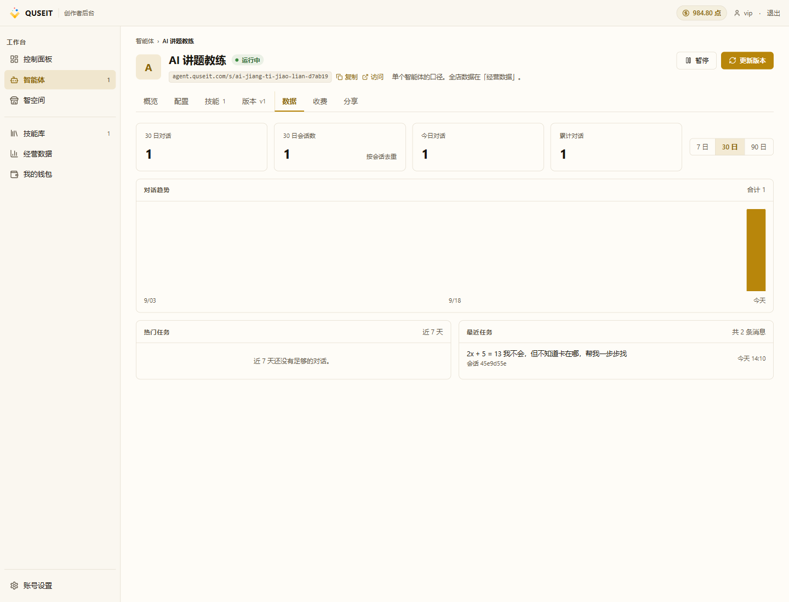

走查访问者视角
PATH 01 第 4 课。本课介绍端到端验证流程:在隐身窗口中以访客身份完成从冷启动页到首次对话的完整路径,再回到创作者后台「数据」tab 核对回放与计费。
为完整观察非创作者视角下的页面表现,可使用以下任一方式:
- 隐身窗口(
Ctrl/Cmd + Shift + N):cookie 与登录态独立,等同于另一干净身份。 - 另注册一个账号:使用个人邮箱注册新账号,体验最贴近真实访客,注册流程约 2 分钟。
本课截图均取自隐身窗口演示。
走查 1 · 未登录访客的登录弹窗
在隐身窗口中打开访问链接,登录对话框将浮于冷启动页之上:

若将链接发送给客户群,多数收件人通常已具备 QUSEIT 账号,直接登录即可。无账号者将看到「注册新账号」入口,注册流程约 30 秒。
走查 2 · 登录后的冷启动页与首次对话
访客登录后,登录对话框关闭,页面转为冷启动页(智能体介绍 + 引导问题 chip + 输入框)。与登录态访客的差异如下:
- 页面顶部不显示「vip」等创作者标识
- 页面底部显示「按轮 1 PTS · 每个账号前 3 轮免费」(本示例智能体采用按轮扣点)
- 页面右下不显示「切换到暗色」按钮(创作者专属)
引导问题 chip 用于降低访客首轮对话的输入成本,访客无需自行组织问句即可发起对话。以下以「2x + 5 = 13 我不会,但不知道卡在哪」为例:

需要留意以下几点技术细节:
- 沙箱预热:首次对话前显示「正在准备工作台…」,由 E2B 沙箱冷启动引起,通常耗时 10–20 秒;后续对话由于 5 分钟空闲保活机制而显著加速。
- 模型推理占位:模型思考过程中显示「正在思考…」占位消息,访客端不可见推理细节。
- 消息气泡方向:访客消息右对齐,智能体消息左对齐,与主流 IM 工具保持一致。
走查 3 · 在「数据」tab 核对回放
对话发生后,无需等待即可切回创作者后台,刷新智能体详情页并选择「数据」tab:

四块统计字段含义如下:
- 30 日对话:30 天内的总对话轮次(用户发送一条 + 智能体回复一条 = 1 轮)。
- 30 日会话数:按会话去重的独立会话数(同一访客的多次来回视为 1 个会话)。
- 今日对话:今日已发生的对话轮次。
- 累计对话:智能体上线以来的对话轮次总和。
会话与对话的区别:同一会话内进行 3 轮交互将记为「会话数 +0 / 对话数 +3」。
最近任务是排查与回放的核心入口 — 每次新会话均显示一行,内容包含「用户的首条提问 + 会话 ID + 时间」。点击可进入完整回放,查看用户提问、智能体回复、沙箱预热时长及扣点明细。
走查 4 · 核对「钱包」的扣费
回到页面顶部,可观察到点数余额变化。以本课演示为例:从初始的「1,000 点」变为「984.80 点」,差额 15.20 点由沙箱运行时长扣费所致,按 2.58 点 / 分钟计费:2.58 × 5.89 分钟 ≈ 15.20 点。
- 沙箱时长(从创作者钱包扣除):2.58 点 / 分钟,无论收费模式,沙箱暂停不计费。
- 按轮扣点(从访客钱包扣除):本示例配置「前 3 轮免费,1 点 / 轮」 — 本课自测仅触发 1 轮,处于免费额度内,访客未扣费。
若需查询完整计费明细,可点击顶栏「我的钱包」进入钱包页面,查看每笔扣费的时间、原因与金额。
走查通过判定
以下检查项全部通过,即可视为上线验证完成:
- 未登录访客访问链接时弹出登录对话框(图 14),而非 404
- 登录后展示冷启动页,含介绍文案与引导问题
- 点击引导问题可触发首轮对话,沙箱预热时长 ≤ 20 秒
- 智能体回复内容与 SKILL.md 角色设定一致(图 15)
- 「数据」tab 的「最近任务」中出现新会话记录(图 16)
- 「今日对话」数值 +1
- 钱包余额相应减少
任一检查项未通过时,优先回到「配置」tab 检查 — 多由 SKILL.md 起草的角色设定不够具体所致。修改完成后须点击右上角「更新版本」(详见 PATH 01 第 5 课)。
常见踩坑
- 「数据」tab 暂未出现新会话:数据写入存在约 60 秒延迟。请刷新页面并等待约 1 分钟。
- 「最近任务」中仅有自测对话:尚未收到真实访客访问 — 等待链接被首次访问后,数据将自动写入。
- 沙箱时长扣费超出预期:长对话使沙箱持续运行数十分钟,创作者钱包将被显著扣减。建议先用低单价配置进行测试,正式运营后再调整。
- 截图中出现「vip」字样而真访客不可见:以创作者账号自测时,系统会显示「你是创作者」与「vip」字样;此为面向创作者本人的明示,不影响真实访客视角。
- 对话趋势柱状图始终显示为 0:数据存在缓存,刷新页面或切换至「7 日」窗口重新加载即可。